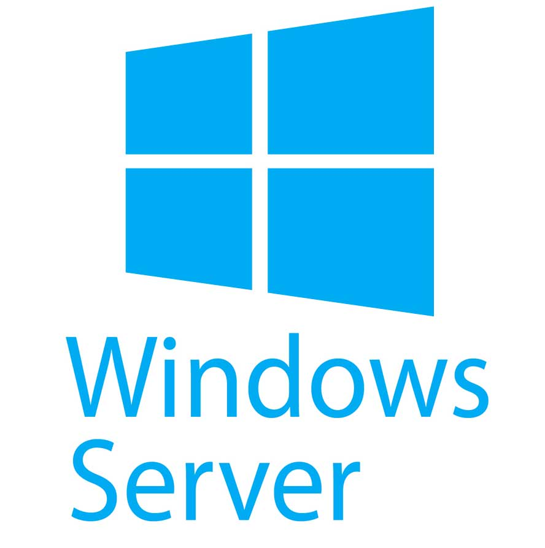
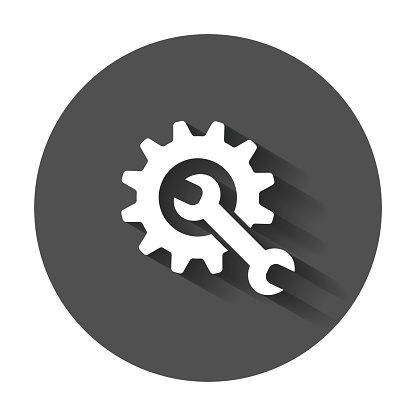

COMPÉTENCES EN INFORMATIQUE
Sur cette page vous pourrez prendre connaissance de mes différentes compétences
en informatique et consulter ou télécharger à la fin mon CV.

Windows Server 2008 et 2012 R2, 2016, 2019
instalation configuration et administration
Active Directory, DNS, DHCP, WDS, DFS, GPO
instalation configuration et administration
poste client Window xp,7,8,8.1,10.
Langage Power Shell et Batch
Masterisation et déploiement
vistualisation Vmware Hyper V
Windows
instalation configuration et administrationWindows Server 2008 et 2012 R2, 2016, 2019
instalation configuration et administration
Active Directory, DNS, DHCP, WDS, DFS, GPO
instalation configuration et administration
poste client Window xp,7,8,8.1,10.
Langage Power Shell et Batch
Masterisation et déploiement
vistualisation Vmware Hyper V

Réseaux
Modèle OSI, TCP/IP,adressage IPv4 / IPv6
Routage statique,
routage dynamique (RIPv1, RIPv2, EIGRP),
DHCP, HSRP, ACL, NAT, sécurité,
VLAN, Trunking, DTP, VTP,
Inter-VLANs, sécurité, Troubleshooting

Supervision (PRTG)
Réparation materiel informatique PC imprimante et photocopieur
logiciel Office Ikos adobe autocad
Maintenance
Gestion de parc informatique EASY VISTA ,GLPI et Fusion Inventory.Supervision (PRTG)
Réparation materiel informatique PC imprimante et photocopieur
logiciel Office Ikos adobe autocad

Linux
instalation configuration et administrationServer WEB (apache, phpmyadmin, mysql)
instalation configuration et administration
FTP, DHCP, DNS
instalation configuration et administration
de poste client sous Debian, Ubuntu, Centos.
Développement WEB
front-endHTML CSS
JavaScript
Bootstrap WordPress

Analyse
rédaction de procédure (utilisateur et technicien)formation utilisateur
Analyse fonctionnel
Analyse de besoin
support aux Utilisateur